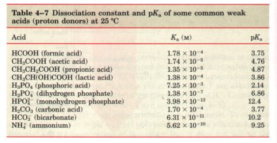
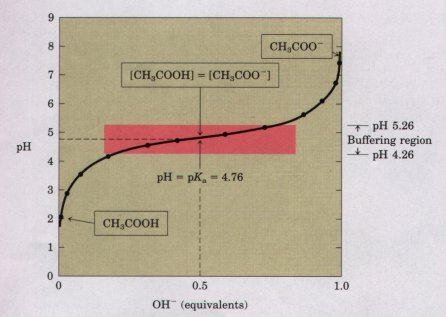
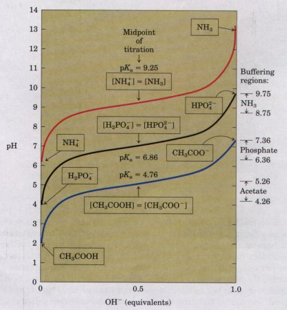
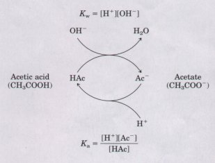

K = |
[H+][A-] |
[HA] |
Hydrochloric, sulfuric, and nitric acids, commonly called strong acids, are completely ionized in dilute aqueous solutions; the strong bases NaOH and KOH are also completely ionized.
Biochemists are often more concerned with the behavior of weak acids and bases-those not completely ionized when dissolved in water. These are common in biological systems and play important roles in metabolism and its regulation. The behavior of aqueous solutions of weak acids and bases is best understood if we first defme some terms.
Acids may be defined as proton donors and bases as proton acceptors. A proton donor and its corresponding proton acceptor make up a conjugate acid-base pair (Table 4-6). Acetic acid (CH3COOH), a proton donor, and the acetate anion (CH3COO-), the corresponding proton acceptor, constitute a conjugate acid-base pair, related by the reversible reaction
CH3COOH == H+ + CH3COO-
Each acid has a characteristic tendency to lose its proton in an aqueous solution. The stronger the acid, the greater its tendency to lose its proton. The tendency of any acid (HA) to lose a proton and form its conjugate base (A-) is defined by the equilibrium constant (K) for the reversible reaction
HA == H+ + A-
which is
K = |
[H+][A-] |
[HA] |
| Equilibrium constants for ionization
reactions are more usually called ionization or
dissociation constants. The dissociation
constants of some acids, often designated Ka, are given
in Table 4-7. Stronger acids, such as formic and lactic
acids, have higher dissociation constants; weaker acids,
such as dihydrogen phosphate (H2P04 ), have lower
dissociation constants. Also included in Table 4-7 are values of pKa, which is analogous to pH and is defined by the equation pKa=log(1/Ka)=-logKa. The more strongly dissociated the acid, the lower its pKa. As we shall now see, the pKa of any weak acid can be determined quite easily. |
 * Each pair consists of a proton donor and a proton acceptor. Some compounds, such as acetic acid, are monoprotic; they car give up only one proton. Others are diprotic (H2CO3 and glycine) or triprotic (H3PO4). |

Titration is used to determine the amount of an acid in a given solution. In this procedure, a measured volume of the acid is titrated with a solution of a strong base, usually sodium hydroxide (NaOH), of known concentration. The NaOH is added in small increments until the acid is consumed (neutralized), as determined with an indicator dye or with a pH meter. The concentration of the acid in the original solution can be calculated from the volume and concentration of NaOH added.
A plot of the pH against the amount of NaOH added (a titration curve) reveals the pKa of the weak acid. Consider the titration of a 0.1 M solution of acetic acid (HAc) with 0.1 M NaOH at 25 'C (Fig. 4-10). Two reversible equilibria are involved in the process:
H2O == H+ + OH- (4-5)
HAc == H+ + Ac- (4-6)
The equilibria must simultaneously conform to their characteristic equilibrium constants, which are, respectively,
Kw = [H+][OH-] = (1 × l0 -14 )M2 (4-7)
| Ka = | [H+][Ac-] |
= 1.74 × 10-5 M (4-8) |
| [HAc] |
At the beginning of the titration, before any NaOH is added, the acetic acid is already slightly ionized, to an extent that can be calculated from its dissociation constant (Eqn 4-8).
As NaOH is gradually introduced, the added OH- combines with the free H+ in the solution to form H20, to an extent that satisfies the equilibrium relationship in Equation 4-7. As free H+ is removed, HAc lissociates further to satisfy its own equilibrium constant (Eqn 4-8). The net result as the titration proceeds is that more and more HAc onizes, forming Ac~, as the NaOH is added. At the midpoint of the titration (Fig. 4-10), at which exactly 0.5 equivalent of NaOH has been added, one-half of the original acetic acid has undergone dissociation, so that the concentration of the proton donor, [HAc], now equals that of the proton acceptor, [Ac-]. At this midpoint a very important relationship holds: the pH of the equimolar solution of acetic acid and acetate is exactly equal to the pKa of acetic acid (pKa = 4.76; see Table 4-7 and Fig. 4-10). The basis for this relationship, which holds for all weak acids, will soon become clear. |
 Fignre 4-10 The titration curve of acetic acid. After the addition of each increment of NaOH to the acetic acid solution, the pH of the mixture is measured. This value is plotted against the fractior of the total amount of NaOH required to neutralize the acetic acid (i.e., to bring it to pH -7). The points so obtained yield the titration curve. Shown in the boxes are the predominant ionic forms at the points designated. At the midpoint of the titration, the concentrations of the proton donor and proton acceptor are equal. The pH at this point is numerically equal to the pKa of acetic acid. The shaded zone is the useful region of buffering power. |
As the titration is continued by adding further increments of NaOH, the remaining undissociated acetic acid is gradually converted into acetate. The end point of the titration occurs at about pH 7.0: all the acetic acid has lost its protons to OH-, to form H20 and acetate. Throughout the titration the two equilibria (Eqns 4-5 and 4-6) coexist, each always conforming to its equilibrium constant.
| Figure 4-11 compares the titration
curves of three weak acids with very different
dissociation constants: acetic acid (pKa = 4.76);
dihydrogen phosphate (pKa = 6.86); and ammonium ion, or
NH4 (pKa = 9.25). Although the titration curves of these
acids have the same shape, they are displaced along the
pH axis because these acids have different strengths.
Acetic acid is the strongest and loses its proton most
readily, since its Ka is highest (pKa lowest) of the
three. Acetic acid is already half dissociated at pH
4.76. H2P04 loses a proton less readily, being half
dissociated at pH 6.86. NH4 is the weakest acid of the
three and does not become half dissociated until pH 9.25.
The most important point about the titration curve of a weak acid is that it shows graphically that a weak acid and its anion-a conjugate acid-base pair-can act as a buffer. |
 Figure 4-11 Comparison of the titration curves of three weak acids, CH3COOH, H2P04- , and NH4+ . The predominant ionic forms at designated points in the titration are given in boxes. The regions of buffering capacity are indicated at the right. Conjugate acid-base pairs are effective buffers between approximately 25 and 75% neutralization of the proton-donor species. |
Almost every biological process is pH dependent; a small change in pH produces a large change in the rate of the process. This is true not only for the many reactions in which the H + ion is a direct participant, but also for those in which there is no apparent role for H+ ions. The enzymes that catalyze cellular reactions, and many of the molecules on which they act, contain ionizable groups with characteristic pKa values. The protonated amino (-NH3 ) and carboxyl groups of amino acids and the phosphate groups of nucleotides, for example, function as weak acids; their ionic state depends upon the pH of the solution in which they are dissolved. As we noted above, ionic interactions are among the forces that stabilize a protein molecule and allow an enzyme to recognize and bind its substrate.
Cells and organisms maintain a speciiic and constant cytosolic pH, keeping biomolecules in their optimal ionic state, usually near pH 7. In multicellular organisms, the pH of the extracellular fluids (blood, for example) is also tightly regulated. Constancy of pH is achieved primarily by biological buffers: mixtures of weak acids and their conjugate bases.
We describe here the ionization equilibria that account for buffering, and show the quantitative relationship between the pH of a buf fered solution and the pKa of the buffer. Biological buffering is illustrated by the phosphate and carbonate buffering systems of humans.
| Buffers are aqueous
systems that tend to resist changes in their pH when
small amounts of acid (H+) or base (OH-) are added. A
buffer system consists of a weak acid (the proton donor)
and its conjugate base (the proton acceptor). As an
example, a mixture of equal concentrations of acetic acid
and acetate ion, found at the midpoint of the titration
curve in Figure 4-10, is a buffer system. The titration
curve of acetic acid has a relatively flat zone extending
about 0.5 pH units on either side of its midpoint pH of
4.76. In this zone there is only a small change in pH
when increments of either H+ or OH-are added to the
system. This relatively flat zone is the buffering region
of the acetic acid-acetate buffer pair. At the midpoint
of the buffering region, where the concentration of the
proton donor (acetic acid) exactly equals that of the
proton acceptor (acetate), the buffering power of the
system is maximal; that is, its pH changes least on
addition of an increment of H+ or OH-. The pH at this
point in the titration curve of acetic acid is equal to
its pKa. The pH of the acetate buffer system does change
slightly when a small amount of H+ or OH- is added, but
this change is very small compared with the pH change
that would result if the same amount of H+ (or OH-) were
added to pure water or to a solution of the salt of a
strong acid and strong base, such as NaCI, which have no
buffering power. Buffering results from two reversible reaction equilibria occurring in a solution of nearly equal concentrations of a proton donor and its conjugate proton acceptor. Figure 4-12 helps to explain how a buffer system works. Whenever H+ or OH- is added to a buffer, the result is a small change in the ratio of the relative concentrations of the weak acid and its anion and thus a small change in pH. The decrease concentration of one component of the system is balanced exactly by a increase in the other. The sum of the buffer components does n change, only their ratio. |
 Figure 4-12 Capacity of the acetic acid-acetate couple to act as a buffer system, capable of absorbing either H+ or OH- through the reversibility of the dissociation of acetic acid. The proton donor, in this case acetic acid (HAc), contains a reserve of bound H+, which can be released to neutralize an addition of OH- to the system, forming HzO. This happens because the product [H+ ]IOH- ] transiently exceeds Kw (1 x 10~14 Mz). The equilibrium quickly adjusts so that this product equals (1 x 10 -14) M^2 (at 25 'C), thus transiently reducing the concentration of H+. But now the quotient [H+][Ac~]/LHAc] is less then Ka, so HAc dissociates further to restore equilibrium. Similarly, the conjugate base, Ac , can react with H+ ions added to the system; again, the two ionization reactions simultaneously come to equilibrium. Thus a conjugate acid-base pair, such as acetic acid and acetate ion, tends to resist a change in pH when small amounts of acid or base are added. Buffering action is simply the consequence of two reversible reactions taking place simultaneously and reaching their points of equilibrium as governed by their equilibrium constants, Kw and Ka. |
Each conjugate acid-base pair has a characteristic pH zone which it is an effective buffer (Fig. 4-11). The H2PO4 /HPO4-pair ha: pKa of 6.86 and thus can serve as a buffer system near pH 6.86; tl NH4 /NH3 pair, with a pKa of 9.25, can act as a buffer near pH 9.2
H2OThe quantitative relationship among pH, the buffering action of a mi ture of weak acid with its conjugate base, and the pKa of the weak ac is given by the Henderson-Hasselbalch equation. The titrati~ curves of acetic acid, H2P04 , and NH4 (Fig. 4-11) have nearly idem cal shapes, suggesting that they all reflect a fundamental law or rel tionship. This is indeed the case. The shape of the titration curve of ar weak acid is expressed by the Henderson-Hasselbalch equatio which is important for understanding buffer action and acid-base ba ance in the blood and tissues of the vertebrate organism. This equatic is simply a useful way of restating the expression for the dissociatic constant of an acid. For the dissociation of a weak acid HA into H+ ar A-, the Henderson-Hasselbalch equation can be derived as follow :
| Ka = | [H+][A-] |
| [HA] |
First solve for [H+]:
| [H+] = Ka | [H+] |
| [A-] |
Then take the negative logarithm of both sides:
| -log[H+] = -log Ka - log | [HA] |
| [A-] |
Substitute pH for -log [H+] and pKa for -log Ka:
| pH = pKa - log | [HA] |
| [A-] |
Now invert -log [HA]/[A~], which involves changing its sign, to obtai the Henderson-Hasselbalch equation:
| pH = pKa + log | [A-] |
| [HA] |
which is stated more generally as
| pH = pKa + log | [proton acceptor] |
| [proton donor] |
This equation fits the titration curve of all weak acids and enables i to deduce a number of important quantitative relationships. For exan ple, it shows why the pKa of a weak acid is equal to the pH of tlsolution at the midpoint of its titration. At this point LHAI = [A~], an
pH = pKa + log 1.0 = pKa + O = pKa
The Henderson-Hasselbalch equation also makes it possible to calculate the pKa of any acid from the molar ratio of proton-donor and proton-acceptor species at any given pH; to calculate the pH of a conjugate acid-base pair of a given pKa and a given molar ratio; and to calculate the molar ratio of proton donor and proton acceptor at any pH given the pKa of the weak acid (Box 4-2).
Box 4-2Solving Problems with the Henderson-Hasselbalch Equation1. Calculate the pKa of lactic acid . given that when the concentration of free lactic acid is 0.010 M and the concentration of lactic is 0.087 M , the pH is 4.8 .
2. Calculae the pH of a mixture of 0.1 M acetic acid and 0.2 M sodium acetate . The pKa of acetic acid is 4.76 .
3. Calculae the radio of the concentration of acetate and acetic acid required in a buffer system of pH 5.30
|
||||||||||||||||||||||||||||||||||||||||||